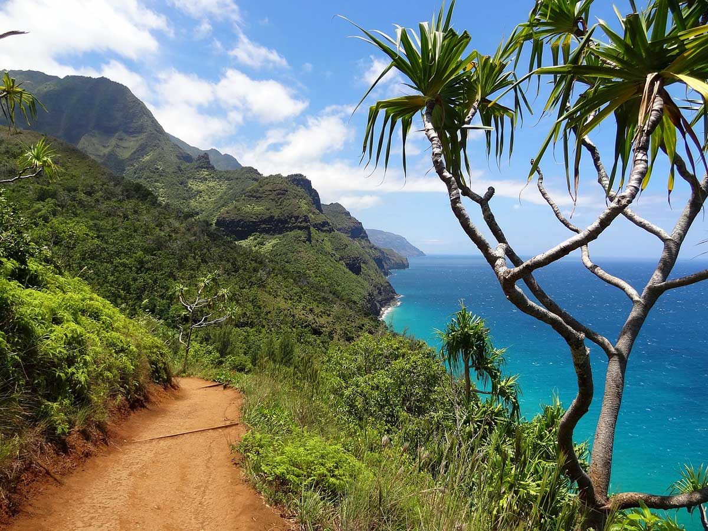

Here are 5 most recommended islands worth visiting:
Not drawn to Mallorca or Mykonos? Whether you’re after sun or not, these quieter spots, from the Aegean to the Baltic, offer a real away-from-it-all vibe.
If you’re looking for the best vacation destinations that are sunny and warm, you’ve come to the right place. We specialize in all things island vacations: think beautiful beaches, swaying palm trees and potent rum punch. But with so many island destinations in the world, from the Caribbean to the South Pacific, how do you decide which one to visit?
We’ve highlighted the best travel destinations below, so you can find the one that’s right for your next island vacation. Read on to find your perfect island — and be sure to send us a postcard.
-
MALDIVES
In the Indian Ocean near India and Sri Lanka, there is a group of 26 natural atolls. They are all known by one common name – Maldives.
-
KAUAI, HAWAII
Did you know that Kauai is called an outdoor paradise? This Hawaiian island has as much as 97% of its territory under forest and mountain ranges. That is why Kauai is the greenest Hawaiian island, created for nature lovers.
If you love trekking, be sure to visit Na Pali Coast. The Kalalau Trail offers beautiful vistas, and you can also go kayaking. Golf lovers will be delighted with the phenomenal golf courses overlooking the ocean.
-
BORA BORA
Bora Bora is an island group in French Polynesia, located in the Pacific Ocean. This fantastic place is a popular tourist destination, with many luxury resorts and overwater bungalows.
The most popular activities in Bora Bora are scuba diving, snorkeling, kitesurfing and jet skiing. Also, you can explore Mount Otemanu and Mount Pahia, if you love hiking.
-
TAHITI
Like Bora Bora, Tahiti is part of French Polynesia in the Pacific Ocean. Volcanic eruptions have divided the island into two parts: Tahiti Nui and Tahiti Iti.
Tahiti is known for lush rainforests, rivers and waterfalls. It is frequented by many scuba divers and honeymooners.
-
NEW ZEALAND

New Zealand is located in the Pacific Ocean and consists of two bigger and 600 smaller islands. The largest landmass of New Zealand, the South Island, has 18 mountain peaks over 3,000 meters (9,842 feet), including the highest mountain – Mount Cook.
The North Island has been marked by volcanism. The largest lake in New Zealand, Lake Taupo, is situated in the caldera of one of the most active supervolcanoes in the world.